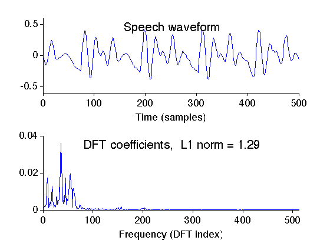
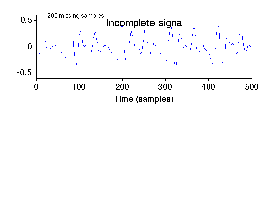
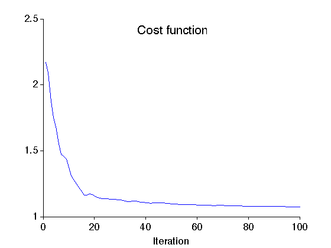
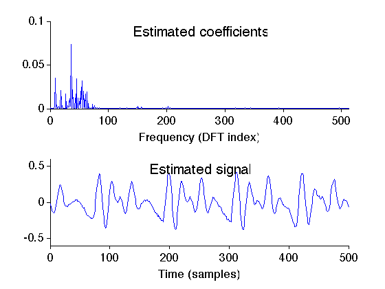

Example: Estimation of missing samples using BP
Estimate the ramdomly distributed missing samples of a speech waveform using sparsity of Fourier coefficients.
Ivan Selesnick NYU-Poly selesi@poly.edu 2011
Contents
Start
clear close all MyGraphPrefsON printme = @(str) print('-deps', sprintf('figures/Example_missing_%s', str)); randn('state',0); % set state so as to exactly reproduce example
Define oversampled DFT functions
Define oversampled DFT as Matlab function handles.
M = 500; % M : length of signal N = 2^10; % N : length of Fourier coefficient vector Afun = @(x) A(x,M,N); % Afun : oversampled DFT (Matlab function handle) ATfun = @(x) AT(x,M,N); p = N; % p : Parseval frame constant
Verify perfect reconstruction property of A
x = rand(M,1);
err = Afun(ATfun(x)) - p * x;
fprintf('Reconstruction error: %e\n', max(abs(err)))
Reconstruction error: 3.410605e-13
Verify Parseval property of A
X = ATfun(x);
E1 = sum(abs(x(:)).^2);
E2 = (1/p)*sum(abs(X(:)).^2);
fprintf('E1 - E2 = %e\n', E1-E2);
E1 - E2 = -8.526513e-14
Load signal data
Load speech waveform data.
[sig,fs] = wavread('data/sp1.wav'); x = sig(5500+(1:M)); % x: signal n = 0:N-1; X = (1/N)*ATfun(x); % X: coefficients signal
Display signal and its DFT
figure(1) clf subplot(2,1,1) plot(x) mytitle('Speech waveform'); xlabel('Time (samples)') box off ymax = 0.5; ymax = 0.6; ylim([-1 1]*ymax) set(gca,'ytick',[-0.5 0 0.5]) subplot(2,1,2) plot(n, abs(X)) xlabel('Frequency (DFT index)') xlim([0 N/2]) box off ax = axis; txt = sprintf('DFT coefficients, L1 norm = %.2f',sum(abs(X))); mytitle(txt); printme('full_signal')
Create signal with missing samples
Simulate randomly missing values by setting the values of randomly selected signal values to NaN (Not a Number).
K = 300; % K : number of known samples k = randperm(M); % random permutation k = k(1:K); % k : indices of known samples s = false(1,M)'; s(k) = true; % s : logical vector (true for known samples) y = x; % y : incomplete signal y(~s) = nan; % Set missing samples to nan (Not a Number) figure(2) clf subplot(2,1,1) plot(y); mytitle('Incomplete signal'); xlabel('Time (samples)') box off ylim([-1 1]*ymax) set(gca,'ytick',[-0.5 0 0.5]) txt = sprintf('%d missing samples', M-K); text(0.05, 0.99, txt, 'units', 'normalized', 'horizontalalignment', 'left' ); printme('incomplete_signal')
Esimate missing samples using basis pursuit (BP)
Run the iterative algorithm to minimize the L1 norm of the Fourier coefficients c subject to the constraint that the reconstructed signal is consistent with the known (available) signal values.
% Define algorithm parameters mu = 15; % mu : augmented Lagrangian parameter Nit = 100; % Nit : number of iterations % Run basis pursuit algorithm for missing samples [c, cost] = bp_missing(y, Afun, ATfun, p, s, mu, Nit); g = Afun(c); % g : estimated signal
Display cost function history of BP algorithm
figure(3) clf plot(1:Nit, cost) mytitle('Cost function'); xlabel('Iteration') box off xlim([0 Nit]) printme('cost')
Display estimated signal and its DFT
Note that the missing samples have been filled in with realistic values.
figure(4) clf subplot(2,1,1) plot(n, abs(c)) txt = 'Estimated coefficients'; mytitle(txt); box off xlim([0 N/2]) xlabel('Frequency (DFT index)') subplot(2,1,2) plot(g) mytitle('Estimated signal'); xlabel('Time (samples)') box off ylim([-1 1]*ymax) set(gca,'ytick',[-0.5 0 0.5]) printme('estimate')
MyGraphPrefsOFF